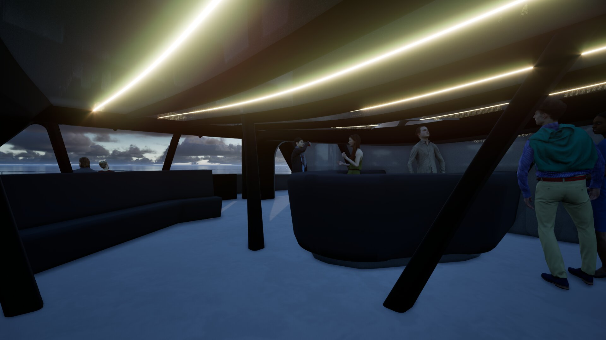
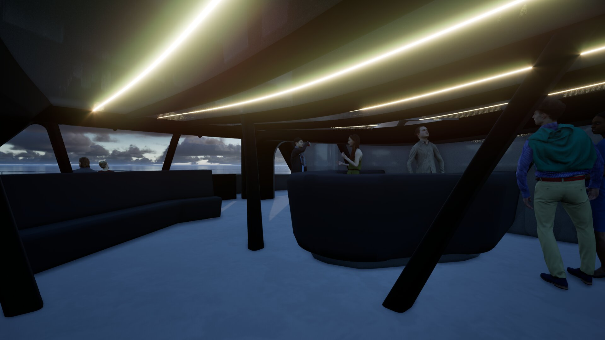

Tenerife - La Gomera
Un catamaran hybride de 24,4m dans un corridor à haute biodiversité.


 



Le navire
- 24,4 mètres - Catamaran hybride
- 80% du temps sous voile
- Propulsion électrique d'appoint
- Matériaux recyclés
L'impact
- 99% réduction CO₂
- 92% réduction bruit
- Protection des cétacés
- Laboratoire d'innovation